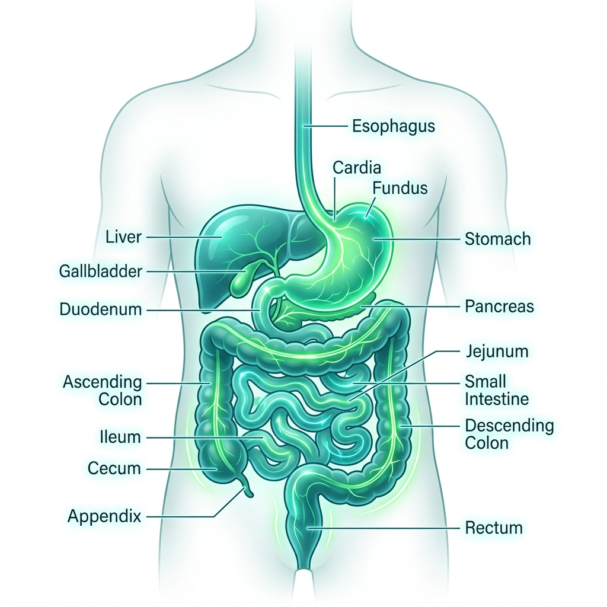

Book a private ₹199 Gut Clarity Call. Get personalised clarity on what your gut pattern is pointing toward — and a personalized 45-day next-step plan from an AYUSH-certified doctor.

Burning comes back a few hours after the antacid wears off.
Daily PPI DependenceSevere bloating after meals makes you scared of eating normally.
Chronic Food FearH. Pylori is negative now — but reflux, burning or gastritis still continues.
Post-Antibiotic GastritisIBS or SIBO has been mentioned. But nobody has mapped what's triggering your pattern.
Unresolved DiagnosisConstipation feels incomplete without a laxative, churan, or extreme pressure.
Sluggish Gut MotilityReports look completely normal. Yet your body clearly does not agree.
Functional Gut DistressMost chronic gut sufferers move from one temporary fix to the next. Relief comes. Hope comes. Then the same symptom walks back in.
Until your symptom pattern is mapped properly — the loop keeps restarting. You don't need another generic suppressant; you need to target the initial trigger.
Acidity, IBS, SIBO, H. Pylori, GERD and constipation can feel similar on the outside, but they require entirely different pathways. The ₹199 call exists to map the path before you try another random fix.
We review what keeps repeating: burning, burping, bloating, stool patterns, food reactions, energy, urgency, or incomplete evacuation.
Your full medical history — current medicines, diet attempts, diagnostic reports, and symptom timelines — is reviewed to identify the likely direction behind the problem.
You get a personalized direction for what your gut needs to focus on next. Not a generic diet chart. A specific, case-based next step.
Instead of just suppressing acid production, we review gut motility, lower esophageal sphincter pressure triggers, and potential low-stomach-acid patterns that cause backflow.
We analyze visceral hypersensitivity, motility loops, and bacterial overgrowth indicators to help direct you toward diet phases that starve bad bacteria without nutritional depletion.
If antibiotic therapies left your gut burning, we focus on mucosal barrier defense support, restoring healthy acidity thresholds, and addressing remaining gut inflammation.
We analyze bile flow patterns, pelvic floor function indicators, and enteric nervous system triggers to stop your dependency on harsh OTC laxatives or herbal churans.
We map enzyme deficiencies, gut fermentation levels, and food transit patterns to isolate which food categories are fermenting prematurely in your small intestine.
This is not about adding one more random supplement or food rule. It's about knowing what your gut issue is actually pointing toward.
Get Personalised Gut Clarity — ₹199Why your acidity, reflux, or burning keeps returning even after months of daily PPI antacids.
Whether your H. Pylori history may still be connected to your current persistent bloating or gastritis.
Why bloating, burping, or severe abdominal heaviness increases after specific healthy meals.
What your chronic constipation, loose stools, mucus, or incomplete evacuation patterns actually indicate.
What in your current medications, probiotics, supplements, or habits may be worsening things behind the scenes.
What your next 45 days should actually focus on — instead of more blind, exhausting trial and error.
The ₹199 call is a small commitment for people who genuinely want clarity. Not another saved reel. Not another forwarded remedy. Actual next-step direction.
Yes, I Want Gut Clarity — ₹199No fake inflated values. Just real, clinical, personalized deliverables to give you a clear direction.
A systematic analysis of how your symptoms developed and what cycles keep repeating.
Isolating whether your symptoms point toward acidity, IBS, SIBO, H. Pylori history, or motility issues.
Understanding what may be providing temporary relief — and what may be quietly stalling recovery.
Determining which daily triggers might be worsening your bloating, burning, or stool irregularities.
Helping you identify what your case needs next, replacing guesswork with a clinical roadmap.
A structured step-by-step guideline of what parameters you should focus on immediately after the call.
When symptoms keep coming back, generic advice stops feeling useful. Here's what changed when their patterns were mapped.
"I spent 2 years trying random probiotics. In just 30 minutes, I understood what was actually wrong and how to fix it."
"After H. Pylori antibiotic courses, my symptoms were still there. The clarity call helped me realize what to focus on next to heal my mucosal barrier."
"I was reacting to every food and bloating after meals. Getting my pattern mapped showed me the actual bacterial trigger instead of just avoiding everything."
"Medicines gave temporary relief but burning kept returning. The next-step direction was highly specific to my acid threshold."
"I was tired of depending on laxatives. The doctor consultation helped me identify the motility sluggishness that was causing the real block."
You complete your quick, secure ₹199 payment through our encrypted checkout page.
You immediately receive an automated confirmation message on WhatsApp with booking details.
Thavira's scheduling team calls you to map out your available consultation slots and details.
Your 1-1 expert-led gut clarity call is scheduled and activated after the slot is confirmed.
This call is for understanding your symptom patterns and providing next-step directions. You will not be pushed to buy anything on the call. If a longer treatment protocol is relevant, it will only be discussed after your history is mapped — and only if it genuinely fits your case.
Medication Safety Note: Do not stop, reduce, or change any prescribed medical treatment without guidance from your primary doctor. Your safety always comes first.
This is a ₹199 gut clarity consultation — not a full treatment program. The goal is to understand your symptoms, history, and likely root-cause direction so you know what parameters your body needs to focus on next.
Yes. After payment, Thavira's scheduling team contacts you on WhatsApp/Call to align slot availability. Your 1-1 call is then scheduled with our AYUSH-certified medical expert.
You receive an automated WhatsApp confirmation message. Our scheduling support desk then calls you to fix your consultation slot at your preferred timing.
Most approaches focus on quick symptom suppression (PPIs or laxatives). This call focuses on clarity first — analyzing your symptoms, medical history, and diet attempts to figure out which root triggers keep resetting the cycle.
No. Do not stop or alter any prescribed medication without direct expert guidance. We review your current medicine history as context, and work alongside your safely managed prescriptions.
No. The consultation covers all chronic digestive patterns — including acid reflux, GERD, gas bloating, incomplete evacuation, chronic constipation, and recurring stomach discomfort.
Yes — this is one of the most common reasons patients seek our support. Routine endoscopy or blood work often shows no structural damage, yet functional issues in motility or microflora still trigger significant discomfort.
That is exactly who this consult is designed for. Sufferers who have done the rounds — allopathy, ayurveda, homeopathy — and still aren't better. With over 5,000 guided patients, we focus on identifying the missed triggers.
No. We do not support miserable, life-long diet charts. The goal of mapping and resolving root causes is to strengthen your gut so you can eventually eat normal, home-cooked foods without flare-ups.
Recurring gut patterns do not resolve on their own. Waiting often results in stricter dietary limitations, food anxiety, and additional dependency on antacids or laxatives. Slots are limited due to clinical schedules.
WhatsApp confirmation • Team slot confirmation • Expert consultation after slot confirmed
Note: Daily consultation slots are limited due to doctor scheduling availability.